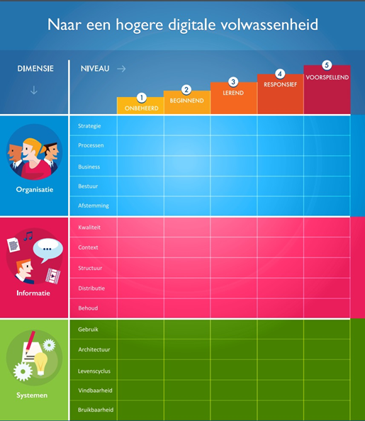

Business Case Flynth
In dit hoofdstuk vindt u de Business Case Flynth die ik samen met Dirk en Marc heb gemaakt.
Belangrijke algemene KSF’s voor Smart Industry
Dit hoofdstuk beschrijft de belangrijkste algemene succesfactoren voor Smart Industry. Omdat Flynth geen fabriek is zijn de algemene succesfactoren in dit hoofdstuk zo opgesteld dat deze toepasbaar zijn voor een kantoor als Flynth. Dit betekent dus wel dat deze succesfactoren er mogelijk heel anders uitzien bij andere organisaties. De volgende succesfactoren van Smart Industry zijn van toepassing op Flynth:
1. Alle data die binnen het bedrijf wordt geproduceerd wordt verzameld.Het is van belang dat Flynth alle data verzamelt. Deze data kan bijvoorbeeld weergegeven worden in Dashboards. Zodra data afwijkt wordt dit automatisch gesignaleerd en kan er actie ondernomen worden. In de toekomst kan de data ook geanalyseerd worden doormiddel van Artificial Intelligence. Dit zorgt ervoor dat er ook preventief actie ondernomen kan worden.
2. Bij het bedrijf staat duurzame energie voorop.Duurzaamheid is ook een onderdeel van Smart Industry. Flynth zou bijvoorbeeld zonnepanelen kunnen aanschaffen.
3. Het bedrijf maakt gebruik van de nieuwste technologieën om zo processen te verbeterenDoor nieuwe technologieën in te voeren zouden er procesversnellingen kunnen plaatsvinden. Waarbij er in fabrieken gedacht kan worden aan 3D-printing, IoT en dergelijke is dit in de accountancy minder van belang. Hierbij kan bij Flynth gedacht worden aan Cloud Accounting, Robotic Accounting en Big Data. Door Cloud Accounting is er meer efficiency door werkplekonafhankelijkheid, en is samenwerken makkelijker doordat klanten en collega’s alle informatie beter in zicht hebben. Robotic accounting zorgt ervoor dat er zoveel mogelijk repetitieve, administratieve en simpele handelingen geautomatiseerd worden. Dit vermindert het handwerk en bespaart tijd en geld. Ook zorgt het ervoor dat er minder menselijke fouten gemaakt worden. Denk bij Big Data aan mogelijkheden als benchmarking, slimme analyses en nog slimmer bedrijfsadvies. Je kan jezelf ontwikkelen tot expert op het gebied van Big Data, en kan klanten hiermee een nieuw soort service bieden.
4. Personeelsleden meenemen met nieuwe technologieën.Een nieuwe ontwikkeling invoeren zonder dat het personeel hierin meegenomen wordt werkt niet. Zij zijn de uiteindelijke gebruikersgroep. Om succes te bereiken moet het aanpassen en toepassen van de innovatie perfect aansluiten bij de bedrijfscultuur. Innovaties kunnen namelijk zowel de bedrijfscultuur, interne processen en externe omgeving omvatten.
5. Digitalisering met betrekking tot de klantIn een tijd zonder digitalisering werd er met name fysiek contact gelegd met de klanten en per post. Momenteel zit dit in de overgangsfase en wordt er vooral contact gelegd via het internet. Een verdere digitalisering voor klanten bestaat er zodra zij gebruik maken van apps waarbij er geen medewerker van Flynth bij betrokken is.
Aspecten Smart Industry wiel toegepast op flynth

In dit hoofdstuk worden aspecten uit het smart industry wiel gehaald die Flynth toepast in haar organisatie. Flynth is een accountants en adviesbureau en is dus een dienstverlenende onderneming. Voor dit hoofdstuk bekijken wij het wiel van binnen naar buiten. Het binnenste gedeelte bestaat uit drie gedeeltes Manufacturing technologies/3d, Network centric en Digitzation.
Flynth is een dienstverlenende onderneming en maakt hierdoor geen gebruik van manufacturing technologies en Network centric. Deze twee delen van het wiel behandelen wij niet voor Flynth. Op het gebied van Digitization zijn Smart Working en Connected Factories de topics waar Flynth voornamelijk meewerkt.
Smart Working
De term Smart Working betekent: ’Nieuwe manieren van werken dat mogelijk wordt gemaakt door technologie.’(Stanford, 2012). Deze topic uit het wiel is het voornaamste wat Flynth gebruikt. Flynth maakt op verschillende wijze gebruik van Smart Working.
Digitalisering is een punt waar Flynth mee bezig is, dit komt mede door covid-19. Zo communiceert Flynth door middel van Skype digitaal met de klant, zodoende houdt Flynth in deze tijd goed contact met de klant. De kantoren van Flynth zijn namelijk gesloten door covid-19.
Naast het digitaal communiceren met klanten maakt Flynth steeds meer gebruik van dashboards. Deze dashboards vervangen rapporten. Deze technologie zorgt ervoor dat informatie sneller bereikbaar is en het zorgt ervoor dat een rapport niet meer handmatig gemaakt hoeft te worden.
De administraties van klanten worden vaker digitaal bijgehouden. Dit komt omdat facturen steeds vaker digitaal verzonden worden en het hierdoor makkelijker is om de administratie digitaal bij te houden. Doordat de administratie digitaal is kan Flynth sneller inzicht in de cijfers van de onderneming geven. Een digitale administratie houdt ook meteen rekening met de eisen van de belastingdienst (Flynth, 2020). Een digitale administratie heeft veel voordelen voor de klanten van Flynth.
Connected Factory
Een Connected Factory is een manufacturing facility dat digitale technology gebruikt om data en informatie te delen tussen mens, machine en sensoren(Tulip, 2020) Flynth is geen manufacturing onderneming, echter maakt zij wel gebruik van Connected Factory. Flytnh is verspreid of verschillende locaties in Nederland. Deze ondernemingen verkrijgen allen veel data. Voor het bestuur van Flynth is het van belang dat de data van alle ondernemingen te vergelijken is. De data is vergelijkbaar doordat ieder onderneming dezelfde systemen gebruikt.
Flynth is zoals hierboven beschreven erg bezig met het digitaliseren van haar processen. Dit geeft goed weer dat Flynth meegaat met de nieuwe technologie en deze implementeert in haar processen.
Meetbaar maken van de KSF’s met KPI
Dit hoofdstuk beschrijft hoe de succesfactoren gemeten kunnen worden.
1. Alle informatie verzamelen die binnen het bedrijf geproduceerd wordt verzameld.Meetwaarden:
- Aantal records in de database
- Aantal gebruikers van dashboards
- Aantal automatische signalementen
Meetwaarden:
- Hoeveelheid opgewekte energie met zonnepanelen
- Aantal “groene” stroomleveranciers over de vestigingen
Meetwaarden:
- Aantal vernieuwde processen
- Gemiddelde doorlooptijd
- Aantal proceshandelingen
- Innovatiekosten
Meetwaarden:
- Resultaten tevredenheidsonderzoek met betrekking tot nieuwe technologieën
- Aantal behaalde cursussen per medewerker
Meetwaarden:
- Aantal digitale administraties
- Aantal digitale communicaties
Volwassenheid van de organisatie
Met de digitale volwassenheid van een organisatie wordt aangegeven hoe deze omgaat met de organisatorische, informatie technische en technologische uitdagingen van een digitale transformatie. Met andere woorden; hoe goed is een bedrijf als Flynth in staat om succesvol te blijven in een digitaal tijdperk als nu. De volwassenheid rapportage stelt de onderneming namelijk in staat om aan te sturen op zwakke punten om digitaal succesvol te worden of blijven.
Meten van de volwassenheid
Om te bepalen waar Flynth staat op de volwassenheid meter, maken we gebruik van het TIMAF schema:
TIMAF omschrijft vijf niveaus van volwassenheid verspreid over vier dimensies. Deze dimensies zijn vervolgens onderverdeeld in verschillende aspecten waardoor het mogelijk is om een goed overzicht te krijgen waar in een dimensie het nog beter kan. Het is belangrijk dat hier objectief over beoordeeld wordt omdat dit een onderneming helpt om te sturen.
Niveaus
Het TIMAF schema kent vijf niveaus: onbeheerd, beginnend, lerend, responsief, voorspellend. Onderstaand een uitleg over ieder niveau.
Onbeheerd: Het laagste niveau van volwassenheid is onbeheerd. Dit niveau geeft aan dat de organisatie niet of nauwelijks aan informatiemanagement doet. Het maakt hier dus geen deel uit van het dagelijks sturen van de organisatie.
Beginnend: Het niveau beginnend zegt dat de organisatie een matige vorm van informatiemanagement ondergaat, echter wordt de organisatie niet aangestuurd op het structureel uitvoeren van strategieën aan de hand van deze gegevens. Wat er gebeurt is meer ad-hoc en tijdelijk van aard.
Lerend: De organisatie weet waar zij naartoe wil op het gebied van informatiemanagement en is hier met een digitale strategie mee bezig.
Responsief: De organisatie is responsief wanneer zij goed kan luisteren naar de signalen van haar stakeholders en de organisatie kan hier juist op reageren. Tevens wordt ook de digitale strategie regelmatig aangepast naar de veranderende omstandigheden.
Voorspellend: Waar bij de vorige mate van volwassenheid werd gereageerd, wordt bij de hoogste vorm van volwassenheid initiatief genomen om vooruit te denken. Hier is de organisatie in staat om digitale middelen zelfstandig beslissingen te laten nemen die de doelgroepen nóg beter bedienen. Ook maakt de organisatie continue transformaties door.
Dimensies van digitale volwassenheid
Nu de niveaus van volwassenheid duidelijk zijn is het nodig om te kijken waarop deze niveaus betrekking hebben. Dit wordt gedaan aan de hand van drie hoofddimensies: organisatie, informatie en systemen. Elk hoofddimensie bestaat weer uit vijf dimensies.
Eerste dimensie: organisatie
In de hoofddimensie organisatie meet je de volwassenheid op het gebied van strategie, processen, de business het bestuur en de afstemming.
Strategie:In de dimensie strategie wordt gekeken in hoeverre de organisatie een digitale strategie heeft waarbij wordt gemeten op het bereiken van de succesfactoren.
Processen: In de dimensie processen wordt gekeken in welke mate de organisatie- en informatieprocessen in kaart zijn gebracht en worden geoptimaliseerd.
Business: De dimensie business geeft aan in welke mate de onderneming haarzelf transformeert op een technologisch volwassen manier.
Bestuur: De dimensie bestuur gaat over de governance van de (informatie-)organisatie. In welke mate zijn eigenaarschap, beleid en standaarden echt belangrijk.
Afstemming:In de dimensie afstemming wordt gekeken in welke mate er binnen de digitale strategie begrip is tussen bedrijfsdeskundige, informatiedeskundige en de IT afdeling. Werken zij goed samen, of begrijpen ze elkaars rol niet.
Tweede dimensie: Informatie
In de hoofddimensie informatie meet je de volwassenheid op het gebied van kwaliteit van de informatie, de context, de structuur, de distributie en het behoud.
Kwaliteit: In de dimensie kwaliteit wordt gekeken in welke mate de kwaliteit van informatie wordt geanalyseerd en geoptimaliseerd. Is de informatie bijvoorbeeld zuiver en betrouwbaar, of zitten er fouten in de data.
Context: De dimensie context geeft de mate aan waarin metadata wordt ingezet om informatie aan te kunnen bieden op relevantie.
Structuur: Structuur geeft aan hoe de organisatie met name de ongestructureerde informatie omvormt in gestructureerde informatie om deze snel en effectief te kunnen gebruiken.
Distributie: De dimensie distributie gaat over de mate waarin de organisatie in staat is om de informatie opnieuw te gebruiken over meerdere kanalen.
Behoud: In de dimensie behoud wordt gekeken in hoeverre de organisatie aandacht besteed aan de duurzame toegankelijkheid van informatie.
Derde dimensie: Systemen
In de hoofddimensie systemen meet je de volwassenheid op het gebied van het gebruik van systemen, de architectuur, de levenscyclus, de vindbaarheid en de bruikbaarheid.
Gebruik: De dimensie gebruik gaat over de mate waarin de ‘Enterprise Information Management’-systemen optimaal worden ingezet in de organisatie.
Architectuur: De dimensie Architectuur bekijkt in hoeverre er sprake is van een business-architectuur, een informatie-architectuur, een applicatie-architectuur en een technologie-architectuur en hoe deze met elkaar zijn verbonden.
Levenscyclus: De dimensie Levenscyclus gaat over de mate waarin de EIM-systemen de volledige levenscyclus van informatiemanagement optimaal ondersteunen.
Vindbaarheid:De dimensie Vindbaarheid beoordeelt hoe vindbaar informatie is voor interne en externe doelgroepen en hoe die vindbaarheid wordt geoptimaliseerd.
Bruikbaarheid:De dimensie Bruikbaarheid gaat over de mate waarin aandacht wordt besteed aan de toegankelijkheid en bruikbaarheid van de EIM-systemen voor de doelgroepen en over de mate waarin die doelgroepen actief worden betrokken bij de inrichtingen van die systemen.
De digitale volwassenheid van Flynth
Nu in kaart is gebracht welke aspecten volgens welke normen gemeten moeten worden, kunnen we de digitale volwassenheid van Flynth meten. Flynth is zoals ieder ander groot bedrijf continue aan het verbeteren op het gebied van informatietechnologieën. Ook onze opdracht heeft bijvoorbeeld te maken met het digitaal maken van een rapportage. In dit hoofdstuk geven wij graag een inzicht op de digitale volwassenheid van Flynth naar ons eigen beleving. Door corona was het voor ons niet mogelijk om op kantoor te zijn en hier first-hand mee te maken wat de werkelijke inzichten zijn op digitaal gebied van Flynth, echter hebben wij wel enige kennis vergaard hoe bepaalde aspecten zijn geregeld.
SWOT Digitale volwassenheid Flynth
Strengths:
Hoeveelheid data: Flynth vergaart veel informatie waarop zij vervolgens kan sturen. Zo worden er bij ieder deel in het proces gegevens opgeslagen die worden meegenomen om processen te verbeteren of veranderen.
Toegankelijkheid: De systemen van Flynth zijn opgebouwd dat iedereen met de juiste toegang overal bij de informatie kan. Dit sterke punt is nu zeker in de corona periode te zien waarbij iedereen thuis is komen zitten, maar niet zonder informatie kwam te zitten.
Weaknesses:
Vergrijzen van de workforce: Voor sommigen lijkt de technologie tegenwoordig ingewikkeld. Dit heeft als gevolg dat er werknemers zijn die het nog ‘op de oude manier’ willen doen.
Data onoverzichtelijk: Omdat er snel veel technologische ontwikkelingen hebben plaatsgevonden binnen Flynth, is het systeem vrij rommelig. Hierdoor zijn er veel datapunten die niet (meer) worden gebruikt of queries die dezelfde gegevens opvragen.
Opportunity's:
Automatisering: Technologische ontwikkelen maakt processen efficiënter en effectiever waardoor werknemers minder tijd kwijt zijn aan handmatige handelingen. Hierdoor komt tijd vrij die de werknemers besteden aan andere, belangrijkere processen.
Threats:
Hackers: De data die vergaard wordt tijdens de processen, dient goed beveiligt te worden. In de huidige tijd worden er steeds vaker digitale systemen gekraakt, hierdoor komt er gevoelige data bij buitenstaanders.
Systeem storingen: Er bestaat een kans dat er een systeemstoring plaats. Dit kan voorkomen zowel bij de leveranciers als bij Flynth. Bijvoorbeeld servers die crashen, waardoor de data niet bereikbaar is.
Reflectie Smart Industry op Flynth
Aangezien Flynth diensten levert en geen productiebedrijf is kan Flynth Smart Industry niet op alle vlakken toepassen. Echter heeft Flynth een goede infrastructuur en kunnen alle medewerkers zonder problemen thuis werken. Flynth heeft laten zien dat ze snel hebben kunnen schakelen op het moment dat de overheid adviseerde om zoveel mogelijk thuis te werken. Ook wordt er veel data verzameld en weergegeven in Dashboards. Het maken van het Toegevoegde Waarde Dashboard was dan ook de opdracht die wij hebben uitgevoerd. Hiermee laat Flynth zien dat zij steeds meer processen automatiseren. In het geval van het Toegevoegde Waarde Dashboard hoeft de rapportage namelijk niet meer met de hand opgesteld te worden.
Visie voor de toekomst
Dit hoofdstuk beschrijft de visie voor de toekomst van Flynth. De visie die wij als projectgroep bedacht hebben is: “Nog meer stuurinformatie uit de data van halen”. Momenteel heeft Flynth veel data. Deze data wordt over het algemeen goed weergegeven in Dashboards. Deze Dashboards zijn goed bereikbaar voor de medewerkers van Flynth. Een volgende stap voor Flynth is om met behulp van Artificial Intelligence conclusies te laten trekken over de data. Hierbij zou de AI gekoppeld kunnen worden aan het Dashboard. Tijdens deze minor hebben wij studenten van DBI een onderzoek laten uitvoeren naar het gebruik van AI in combinatie met BI (Business Intelligence, Dashboarding is hier een onderdeel van). De conclusie van dit onderzoek was dat AI een duidelijke toevoeging is aan BI. Echter, zien zij AI als ondersteuning. Beslissingen zouden tenslotte nog steeds door de managers gemaakt worden. Het gehele onderzoek van de DBI-studenten is hier te lezen.
Bilbliografie
Flynth. (2020, 7 29). Flynth. Opgehaald van nieuws: https://www.flynth.nl/nieuws-achtergrond/nieuws/digitalisering-van-uw-administratie-in-coronatijd
Stanford, N. (2012, 7). Flexibility. Opgehaald van Smart Working: revolutionary or evolutionary?: http://www.flexibility.co.uk/flexwork/general/Naomi-Stanford-smart-working.htm#:~:text='Smart%20Working'%20is%20the%20term,from%20Flexibility.co.uk
Timaf. (2020). Opgehaald van Alles over informatiemanagement: https://www.allesoverinformatiemanagement.nl/wat-is-digitale-volwassenheid/
Tulip. (2020). Tulip. Opgehaald van https://tulip.co/glossary/connected-factory/